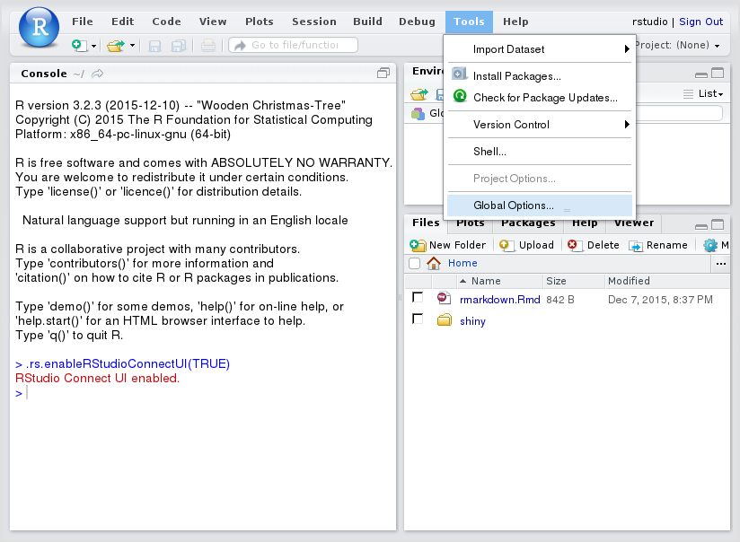
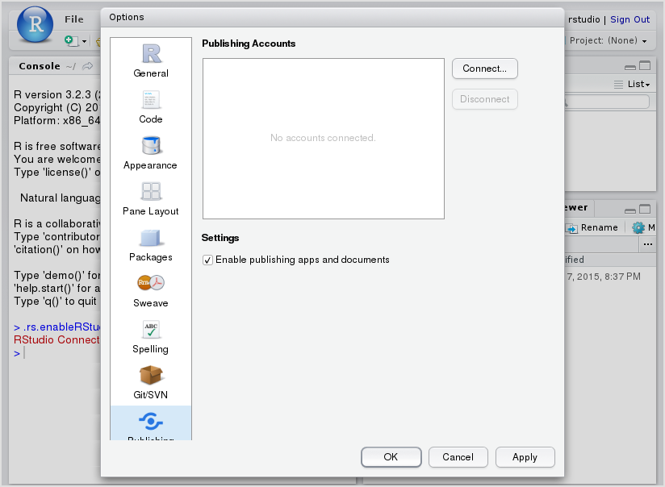
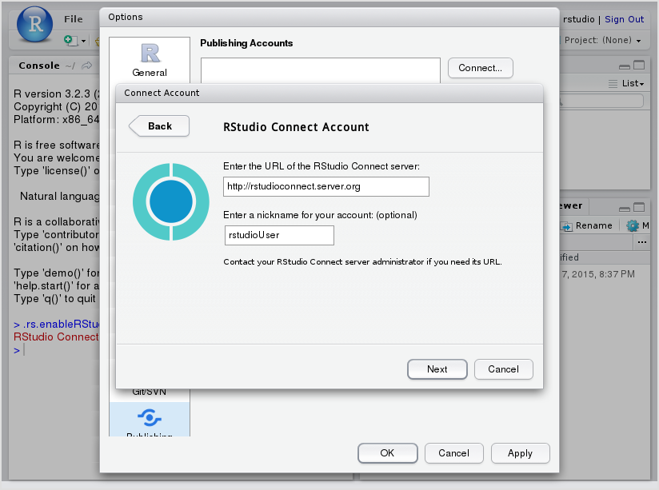

2 Connecting
If you have already connected your RStudio IDE, see Section 3 to learn how to publish content to RStudio Connect.
2.1 Update the IDE
At the time of this writing, you will need to install at least version 1.0.44 of the RStudio IDE to interact with Connect. You can confirm this by opening the IDE and clicking “Help” > “About RStudio” and checking the version number at the top of that pane. If you are not running at least version 1.0.44, you should download the latest release.
2.2 Connecting Your Account
 You’ll need to connect your IDE to Connect and authorize the IDE to use your Connect account. To add a publishing account to RStudio Connect, click Tools then Global Options… in the file menu.
 This will open up the options menu, at which point you can click the Publishing icon on the sidebar, and then the Connect… button to create a new account.
 Select that you want to configure an RStudio Connect account then enter the address of your server. If you are using an RStudio-provided URL such as “https://beta.rstudioconnect.com”, enter it here. Otherwise, your Connect administrator can provide you with the address of the RStudio Connect server.
The optional nickname is helpful when managing multiple Connect accounts.
Clicking Next will open up a login window for RStudio Connect.
Log into Connect and authorize the IDE to deploy on your behalf.
You have successfully configured the RStudio IDE and are ready to publish content to RStudio Connect! See Section 3.